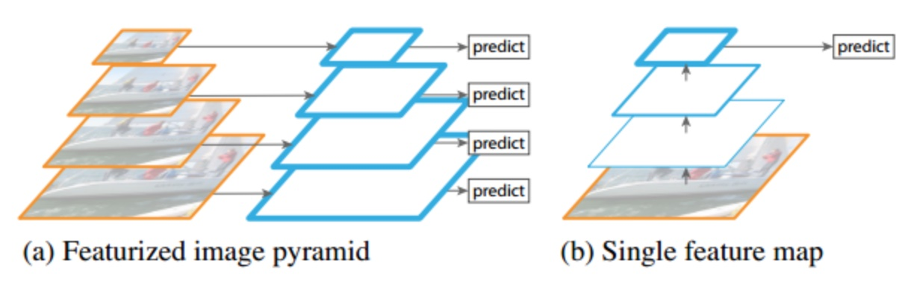

6.6 Mask RCNN
学习目标
- 目标
- 说明Mask RCNN的结构特点
- 掌握Mask RCNN的RoIAlign方法
- 掌握Mask RCNN的mask原理
- 了解Mask RCNN的主网络结构
- 了解Mask RCNN训练实验结果
- 应用
- 无
背景
目标检测和语义分割的效果在短时间内得到了很大的改善。在很大程度上，这些进步是由强大的基线系统驱动的，例如，分别用于目标检测和语义分割的Fast/Faster R-CNN和全卷积网络(FCN)框架。这些方法在概念上是直观的，提供灵活性和鲁棒性，以及快速的训练和推理。论文作者在这项工作中的目标是为目标分割开发一个相对有力的框架。
Mask RCNN主要解决的是实例分割，语义分割 (semantic segmentation) 指的是把一张图像的每一个像素进行分类, 比如把图像中所有的人分为一类. 而实例分割 (instance segmentation) 是指按照对象 (object) 进行分类, 那么不同的人就要分为不同的类别.
- deeplab:语义分割
- maskrcnn：实例分割
Mask R-CNN的输出见下图：

运行视频检测和分割的效果
YOLOv2 vs YOLOv3 vs Mask RCNN vs Deeplab Xception：https://www.bilibili.com/video/av63981949/
6.6.1 Mask RCNN介绍
Mask R-CNN是何凯明的力作，将Object Detection与Semantic Segmentation合在了一起做。Mask R-CNN是一个很多state-of-the-art算法的合成体，并非常巧妙的设计了这些模块的合成接口。
6.6.1.1 回顾
Faster R-CNN：我们首先简要回顾一下Faster R-CNN检测器。Faster R-CNN由两个阶段组成。
- 称为区域提议网络（RPN）的第一阶段提出候选目标边界框。
- 第二阶段，本质上是Fast R-CNN，使用RoIPool从每个候选框中提取特征，并进行分类和边界回归。两个阶段使用的特征可以共享，以便更快的推理。
对于FasterR-CNN来说，对于每个目标对象，它有两个输出，一个是类标签（classlabel），一个是边界框的偏移值（bounding-box offset）
6.6.1.2 Mask R-CNN
Mask R-CNN采用相同的两个阶段，在Faster R-CNN网络上的修改，具体包括：
1、采用ResNet-FPN的架构，并将ROI Pooling层替换成了ROIAlign
2、添加了并列的FCN层（Mask层）
- 第一阶段：只不过特征提取采用ResNet-FPN的架构，得到目标边界框。（FPN实际上是一种通用架构，可以结合各种骨架网络使用，比如VGG，ResNet等。Mask RCNN文章中使用了ResNNet-FPN网络结构）
- 多尺度检测在目标检测中变得越来越重要，对小目标的检测尤其如此。
- FasterRCNN的例子中对多级特征进行提取合并
- 
完整ResNet与FPN结构：ResNet-FPN作为RPN输入的feature map是 ，而作为后续Fast RCNN的输入则是

第二阶段：通过一个RoIAlign除了预测类和预测框偏移，Mask R-CNN还为每个RoI输出二进制掩码。这与最近的其它系统相反，其分类取依赖于掩码预测。
Mask R-CNN方法增加了第三个分支的输出：进一步的是为每个RoI生成了一个目标掩码（二元掩码）。目标掩码与已有的class和box输出的不同在于它需要对目标的空间布局有一个更精细的提取。

掩码分支对于每个RoI的输出维度假设即K个分辨率为m×m的二进制掩码，每个类别一个，K表示类别数量。
6.6.1.3 RoIAlign
- 回顾：Faster-rcnn中的ROIPool是一种针对每一个在特征图中映射得到的Region of Interested的提取一个小尺度特征图（比如说7x7）的标准操作，它用以解决将不同尺度的ROI提取成相同尺度的特征大小的问题。
但是由于我们要实现像素级的 mask 图像, 所以如果仍然使用 Fast RCNN 中的 RoIPool 的话, 会出现一些误差:因为特征图上的 RoI 池化为固定大小 (比如 7×7) 的盒子 (bins) 时也可能存在取整操作。这些取整会使得 RoI 与提取的特征之间存在偏差, 这样小的偏差对分类基本没什么影像, 但是对像素级的分割必然会产生较大的负面影响。

- 原图800x800，经过VGG得到下采样32倍之后的25x25的特征图大小，RoI大小为665x665，所以转换到特诊途中为20x20（取整之后的），然后通过ROIPool的时候又要做7x7最大池化分成49块，显然，每个矩形块区域的边长为2.86，又含有小数，于是ROI Pooling 再次调整到2。
- 经过两次的调整得到候选区域已经出现了很大的误差了。
- 原因：为什么很大呢?
- 注意到特征图上的 1 个像素的误差会引起原始图像 16 个像素的误差, 如果池化了五次则会导致 32 个像素的误差
- 该层特征图上0.1个像素的偏差，缩放到原图就是3.2个像素。那么0.8的偏差，在原图上就是接近30个像素点的差别，影响还是很大的。
提出RoIAlign 的方法
主要包含三点:
- 1、预选框的大小保持浮点数状态不做取整
- 2、RoI 分割为 7×7 的单元时每个单元的边界不做取整
- 3、使用双线性内插法，在每个单元中采样四个固定位置的值进行池化
2、做法
1、假定原图中有一region proposal，还是大小为665x665，这样，映射到特征图中的大小：665/32=20.78,即20.78x20.78，此时，没有像RoiPooling那样就行取整操作，保留浮点数。
2、假定pooled_w=7,pooled_h=7,即pooling后固定成7x7大小的特征图，所以，将在 feature map上映射的20.78x20.78的region proposal 划分成49个同等大小的小区域，每个小区域的大小20.78/7=2.97,即2.97x2.97，得到下图共49个这样的大小的区域：

步骤 1：假定采样点数为4，即表示，对于每个2.97x2.97的小区域，平分四份，每一份取其中心点位置，而中心点位置的像素，采用双线性插值法进行计算。一个2.97 x2.97的区域就会得到四个点的像素值。
步骤2：取四个像素值中最大值作为这个小区域(即：2.97x2.97大小的区域)的像素值，如此类推，同样是49个小区域得到49个像素值，组成7x7大小的feature map
6.6.1.3 对比两种方式
- 对于检测图片中大目标物体时(VOC2007)，两种方案的差别不大
- 而如果是图片中有较多小目标物体需要检测(COCO2017)，则优先选择RoiAlign，更精准些。
- RoIAlign起到了很大的作用：论文中可以将掩码准确度提高0.1至0.5
6.6.1.4 主干架构（backbone architecture）的head结构（Mask预测部分）
论文中尝试的网络主干 (backbone) 结构有:
- 1、ResNet-50-C4
- 2、ResNet-101-C4
- 3、ResNeXt-101
- 4、ResNet-50-FPN
- 5、ResNet-101-FPN
注: Faster RCNN 使用 ResNets 的原始实现中从第四阶段的最后一次卷积之后提取特征, 我们称之为 C4. FPN 是指 Feature Pyramid Network

用于分类回归和分割的网络头部 (head) 结构（头部结构）:
- 每个候选区域经过ROIAlign得到：分类和回归部分保持 Faster RCNN 中的结构不变, ResNet-C4 主干结构中额外添加 ResNet 的第五阶段
- 每个候选区域经过ROIAlign得到：分割部分使用全卷积作为 mask 预测分支
- 其实就是得到了图片中某个物体的像素属于哪个类别（0/1）

- 上图为两个结构对应的mask部分设置
- 数字表示分辨率或通道数，箭头表示卷积、反卷积、全连接层. 所有的卷积都是 3×3 的
- 1、输出层的卷积除外 (是 1×1 的)
- 2、反卷积是 2×2 的, 步长为 2, 使用 ReLU 激活
- 3、左边: 'res5' 表示 ResNet 的第五个阶段, 右边: '×4' 表示 4 个连续的卷积
6.6.1.4 训练细节
1、多任务损失函数
Mask RCNN 仍然使用两阶段方法, 在第二阶段添加了 mask 分支, 损失函数为:
注：分类损失Lcls和检测框损失Lbox与中定义的相同。其中
- mask的损失计算
- 对于每个RoI，掩码分支都有一个[m, m, K]维输出，该输出编码K个分辨率为m×m的二进制掩码，每个K类中的一个掩码。大写为总类别,小写为其中一个类别
- 对于每个RoI区域，找到对应分配的GT类别，Lmask定义的时候，只是定义了对应k这个地方的mask。

- 假设最后得到的7x7的掩码，那么每个像素的对应是假设80个类别中的一个进行损失计算，不是有80个预测结果。
- 而是只有某个位置进行了sigmoid处理之后，得到的结果与GT的进行逻辑回归损失计算。其他的地方不贡献损失
- 为什么不算所有的：
- 因为是一个RoI区域对应一个类别，这个区域已经很小了，就只属于这个类别即可。可以看做这些像素是一个整体类别
这与FCN方法是不同，FCN是对每个像素进行多类别softmax分类，然后计算交叉熵损失，这种做法是会造成类间竞争的，而每个类别使用sigmoid输出并计算二值损失，可以避免类间竞争。实验表明，通过这种方法，可以较好地提升性能。
2、训练
- 1、正负样本：ground truth box 的 IoU 重合度超过 0.5 的 RoI 视为正例, 否则为反例.
- Mask 损失只定义在正例上. Mask 分支每个 RoI 可以预测 K (总类别数) 个 masks, 但我们只使用第 k 个, 这里的 k 是分类分支预测出的类别
- 2、图像 resize 到短边为 800 像素.
- 3、每个 mini-batch 每个 GPU 使用两张图, 每张图有 N 个采样的 RoIs, 正负样本数比例为 1:3
- C4 主干的 N=64, FPN 主干的 N=512.
- 4、参数：在 8 块 GPU 上训练 160k 步, 在第 120k 步的时候学习率从 0.02 下降到 0.002. 使用 0.0001 的权重衰减和 0.9 的动量.
- 5、RPN 的 anchor 使用了 5 种尺寸和 3 种比例, 与 FPN 中一致。一共15中类别的先验框
3、运行效果：
模型可以在GPU上以200毫秒每帧的速度运行，使用一台有8个GPU的机器，在COCO上训练需要一到两天的时间。
4、测试阶段
- 1、C4 的 proposals 的数量为 300, FPN 为 1000.
- 2、在所有的 proposals 上都进行 Bbox 回归, 最后应用 NMS
- 3、Mask 分支使用得分最高的 100 个检测框
- m×m 的浮点数的 mask 输出 resize 到 RoI 的大小, 然后应用 0.5 的阈值进行二值化。
6.6.4 效果
6.6.4.1 目标分割
Mask R-CNN超越了COCO实例分割任务上所有先前最先进的单一模型结果，其中包括COCO 2016挑战优胜者。作为副产品，我们的方法也优于COCO对象检测任务。
实例分割：MaskRCNN每个物体对象对应到一个类别，还有得到位置。所以能区分图片中同类别物体但是位置不一样
与以往实例分割算法比较
将Mask R-CNN与其它最先进的目标分割方法进行比较，如下表（表1）所示：（COCO test-dev上的目标分割掩码AP。 MNC和FCIS分别是COCO 2015和2016分割挑战的获胜者。Mask R-CNN优于更复杂的，包含多尺度训练和测试、水平翻转测试的FCIS+++，和OHEM。所有条目都是单模型的结果。）

对比：

FCIS+++对比 Mask R-CNN（ResNet-101-FPN）。 FCIS在重叠对象上有问题，Mask R-CNN没问题。
6.6.4.2 消融实验

1、结构上：表a显示了具有各种使用不同下层网络的Mask R-CNN。受益于更深层次的网络（50对比101）和高级设计，包括FPN和ResNeXt。我们注意到并不是所有的框架都会从更深层次的或高级的网络中自动获益
2、独立与非独立掩码：Mask R-CNN解耦了掩码和类预测：由于现有的检测框分支预测类标签，所以我们为每个类生成一个掩码，而不会在类之间产生竞争（通过像素级Sigmoid和二值化损失）。在表b中，这些方法将掩码和类预测的任务结合，导致了掩码AP（5.5个点）的严重损失。
3、RoIAlign：表c显示了对提出的RoIAlign层的评估。对于这个实验，使用的下层网络为ResNet-50-C4，其步进为16。RoIAlign相对RoIPool将AP提高了约3个点，在高IoU（AP75）结果中增益更多。
采用双线性采样的ROIAlign与提出的RoIWarp进行比较，RoIWarp仍然四舍五入了RoI，与输入失去了对齐。从表c可以看出，RoIWarp与RoIPool效果差不多，比RoIAlign差得多。这突出表明正确的对齐是关键。
4、掩码分支：
分割是一个像素到像素的任务，我们使用FCN来利用掩码的空间布局。在表e中，我们使用ResNet-50-FPN下层网络来比较多层感知机（MLP）和FCN。使用FCN可以提供超过MLP 2.1个点的AP增益。为了与与MLP进行公平的比较，FCN的上层网络的卷积层没有被预训练。
6.6.4.3 目标检测结果
在COCO数据集上将Mask R-CNN与其它最先进的目标检测方法进行比较，如下表所示：（目标检测结果（目标边界框AP），单模型，在test-dev上与其它最先进的技术对比。使用ResNet-101-FPN的Mask R-CNN优于所有先前最先进的模型的基本变体（实验中忽略了掩码输出）。Mask R-CNN超过12的增益来自使用RoIAlign（+1.1 APbb），多任务训练（+0.9 APbb）和ResNeXt-101（+1.6 APbb）。）

为了作进一步的比较，论文作者训练了一个没有掩码分支版本的Mask R-CNN，见表3中的“Faster R-CNN，RoIAlign”。由于RoIAlign，该模型的性能优于中提出的模型。但是比Mask R-CNN低0.9个点的AP。这个差距这是由于Mask R-CNN的多任务训练产生的。
6.6.4.4 Cityscapes上的实验
Cityscapes数据集的目标分割结果。该数据集具有精细标注的2975个训练图像，500个验证图像和1525个测试图像。它还有20k粗糙的训练图像，无精细标注，Cityscapes数据集的主要挑战是训练数据较少，特别是对于卡车，公共汽车和火车的类别，每个类别的训练样本大约有200-500个。所有图像的分辨率为2048 x 1024像素。目标分割任务涉及8个对象类别，其训练集中的总共目标数为：
| 人 | 骑手 | 小汽车 | 卡车 | 公交车 | 火车 | 摩托车 | 自行车 |
|---|---|---|---|---|---|---|---|
| 17.9k | 1.8k | 26.9k | 0.5k | 0.4k | 0.2k | 0.7k | 3.7k |
该任务的目标分割性能由和COCO一样的AP（在IoU阈值上平均）来测量，也包括AP50（即，IoU为0.5的掩码AP）。
实现：
- 1、Mask R-CNN模型使用的下层网络是ResNet-FPN-50，也测试了对应的101层的网络，不过由于数据集比较小，性能相似。
- 2、将图像在[800，1024]像素范围内随机缩放（较短边）进行训练，从而减少过拟合。测试时则统一缩放到1024像素。
- 3、使用的批量大小为每个GPU 1个图像（实际上8个GPU上有8个），学习率为0.01，迭代次数为24k，在迭代次数达到18k时，学习率减少到0.001
结果：我们在测试集和验证集上，将我们的结果与其它主流方法进行了比较，使用预先训练好的COCO Mask R-CNN模型（骑手类别被随机初始化）。如下表（表7）所示：

- 1、对于人和小汽车类别，Cityscapes数据集包含了大量的类内重叠目标（每个图像平均6人和9辆小汽车）。类内重叠是目标分割的核心难点。论文的方法在这两个类别相对前最佳结果有大幅度改善（人相对提升了约85％，从16.5提高到30.5，小汽车相对提升了约30％，从35.7提高到46.9）。
- 2、使用COCO预训练的Mask R-CNN模型在测试集上达到了32.0 AP，比不预训练的模型提高了6个点。这表明足够的训练数据的重要性。
- 3、观察到测试集和训练集AP之间的偏差，偏差主要是由卡车，公共汽车和火车类别造成的，其中只使用精细标注训练数据的模型，在验证集和测试集上的AP分别为28.8/22.8，53.5/32.2和33.0/18.6。这表明这些训练数据很少的类别存在domain shift。 COCO预训练有助于改善这些类别上的结果，然而，domain shift依然存在，在验证集和测试集上的AP分别为38.0/30.1，57.5/40.9和41.2/30.9。
Cityscapes的结果示例如下图：

6.6.4.5 Mask R-CNN人体姿态估计（了解）
通过COCO关键点数据集上的人体姿态估计任务来展示论文框架的通用性。通过将每个关键点视为one-hot二进制掩码，只需要很少的修改，Mask R-CNN可以应用于人体关键点检测。不需要额外的技巧，Mask R-CNN超过了COCO 2016人体关键点检测比赛的冠军，同时运行速度可达5 FPS。因此，Mask R-CNN可以被更广泛地看作是用于目标级识别的灵活框架，并且可以容易地扩展到更复杂的任务。

6.6.5 小结
- 说明Mask RCNN的结构特点
- 掌握Mask RCNN的RoIAlign方法
- 掌握Mask RCNN的mask原理
- 了解Mask RCNN的主网络结构
- 了解Mask RCNN训练实验结果